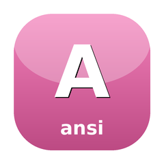

🍬 CandyAnsi
ANSI escape-sequence parser and state machine

Parse ANSI escape sequences into structured state transitions — SGR attributes, cursor movement, erase operations, and DEC private modes — without coupling to terminal-cell-grid concerns. Used by CandyVt to drive the VT500 state machine.
Install
composer require sugarcraft/candy-ansiQuickstart
use SugarCraft\Ansi\Parser\{DebugHandler, Parser};
$handler = new DebugHandler(); // records every parse action
$parser = new Parser($handler);
// Chunks may split anywhere; in-flight sequences carry across feed() calls.
$parser->feed("\x1b[1;");
$parser->feed("31mHi\x1b[0m");
$parser->flush(); // end of stream: dispatch anything pending
$handler->filter('csi'); // two csi entries: params [1, 31] then [0], final 'm' (109)
$handler->filter('print'); // 'H', 'i'To drive a cell grid, implement CsiHandler (cursor, erase, scroll, SGR, DEC modes) and OscHandler (title, hyperlink), then bridge them to the parser:
use SugarCraft\Ansi\Parser\{HandlerAdapter, Parser};
$parser = new Parser(new HandlerAdapter($myCsiHandler, $myOscHandler));
$parser->parseComplete($bytes); // feed() + flush() in one callWhat's in the box
VT500 state machine
Parser implements the Paul Williams DEC parser and dispatches abstract Handler events: printChar, execute, csiDispatch, escDispatch, oscDispatch, dcsDispatch, sosPmApcDispatch.Partial-input safeFeed any chunk size. Incomplete sequences and UTF-8 runes wait for the next
feed(); flush() (or parseComplete()) settles the end of the stream.CSI handler interface
CsiHandler covers the emulator CSI set: CUU/CUD/CUF/CUB/CUP/HVP, ED/EL, SU/SD, IL/DL, ICH/DCH, REP, SCO save/restore, CR/LF, DECSET/DECRST, DECSTBM, TBC/CHT/CBT and SGR. HandlerAdapter translates parser events into these calls.Sub-parameters
subparams() and Parser::groupSubparameters() keep ECMA-48 colon groups apart, so CSI 4:3 m (curly underline) is not confused with CSI 4;3 m. Handlers can opt in through SubparamsAwareHandler.Bounded payloadsDCS/OSC/SOS/PM/APC payloads are capped (64 KiB by default; the third constructor argument raises it), so a hostile stream cannot grow memory without limit.
DebugHandlerRecords every action as
['type' => …, 'detail' => …] in $log; filter($type) selects one kind. Useful in tests and for stream inspection.Use it for
- ANSI stream inspection — parse escape sequences into structured events without spawning a terminal.
- Feeding CandyVt — drive the VT500 state machine by passing parsed events to the terminal emulator.
- SGR decoding — receive every SGR parameter list, colon sub-parameters included, as the stream arrives.
Source & demos
- Source on GitHub
- Full README
- Runnable examples
- Port of charmbracelet/x/ansi (Go upstream)
API
| Class | Method | Description |
|---|---|---|
| Parser | __construct(Handler, bool $replaceMalformed = false, int $maxStringBuffer = 65536) | Parser bound to one handler |
| Parser | feed(bytes) / flush() / parseComplete(bytes) / reset() | Stream bytes, settle end of stream, one-shot parse, return to Ground |
| Parser | currentState(): State / subparams(): list<bool> | Current state-machine state; colon flags for the last parameter list |
| Parser | static groupSubparameters(params, flags) | Regroup a flat parameter list by its colon flags |
| Handler | printChar / execute / csiDispatch / escDispatch / oscDispatch / dcsDispatch / sosPmApcDispatch | Parse events a handler receives |
| HandlerAdapter | __construct(CsiHandler, OscHandler) | Bridges parser events to the CSI and OSC handler interfaces |
| CsiHandler | printable / cuu/cud/cuf/cub / cup / sgr / ed / el / decset / decrst / decstbm / tbc / cht / cbt / … | Emulator-facing CSI actions |
| OscHandler | title(string) / hyperlink(uri, id) | Emulator-facing OSC actions |
| DebugHandler | $log / filter(type) | Records every action for inspection |